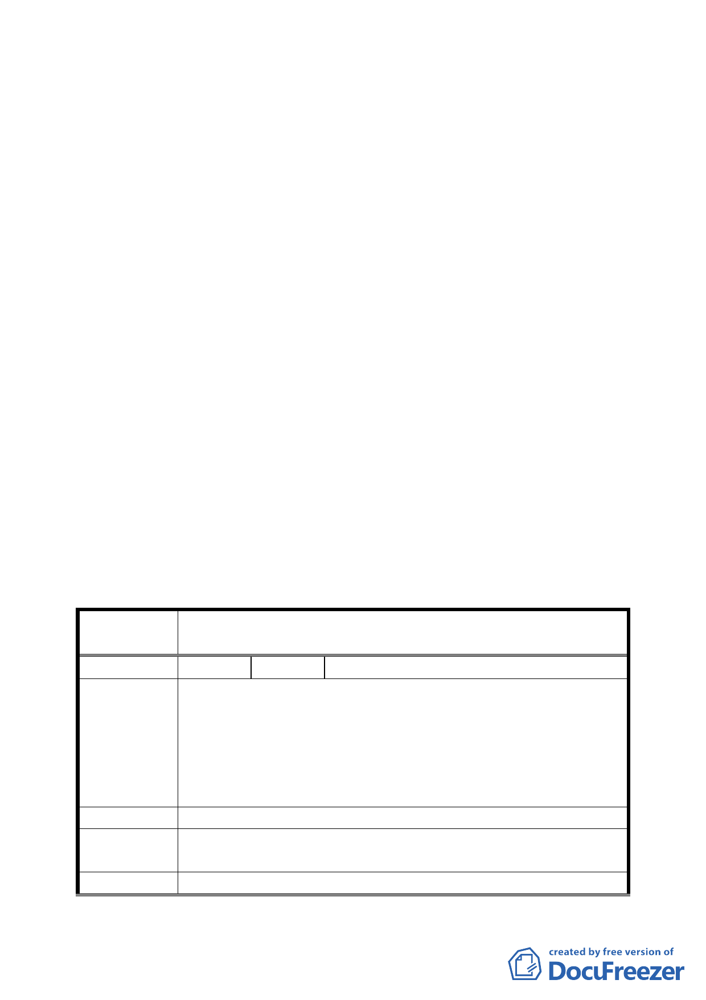

8. 應有樹木的保護與管制措施。
9. 停車問題該如何處理？應提出具體概念。
10.建蔽率與開挖率應考量未來建築配置、樹木保存情況
而做更細緻設計。
11.開挖率 70％之計算標準為何？請詳細調查計算後討
論是否有調降之必要（且要配合現有大型植栽的情
況，逐一調查）。
（五）為配合保存區的風貌，西側公園的規劃設計應有規範。
（六）本專案小組已完成主要計畫之審議，將先提委員會議討
論並儘速送內政部審議。
決議：
一、 本案依文化局所提修正內容對照表修正通過。
二、 有關公民或團體陳情意見決議情形詳如綜理表。
附帶決議：
請專案小組審查細部計畫時針對建築型式、建築規範以及公共利
益與地主權利關係調和等議題詳加討論。
臺北市都市計畫委員會公民或團體所提意見綜理表
案 名 變更臺北市中正區齊東街附近住宅區為保存區及日式宿舍風
貌保存特定專用區主要計畫案
編
號1
陳情人 林仁庸
建議位置：中正區臨沂段一小段 579、581 地號（中正區齊東
街 53 巷 9 號）。
陳情理由
建議理由：
一、 文化局審查歷史建物程序違法。
二、 另實體消滅，無法指定歷史建物。
三、 侵害人民財產權。
建 議 辦 法 希望撤銷本都市計畫變更案。
專案小組
審查結論
基於整體環境形塑理念，原則同意依原公展方案。
委員會決議 本案依文化局所提修正內容對照表修正通過。
五